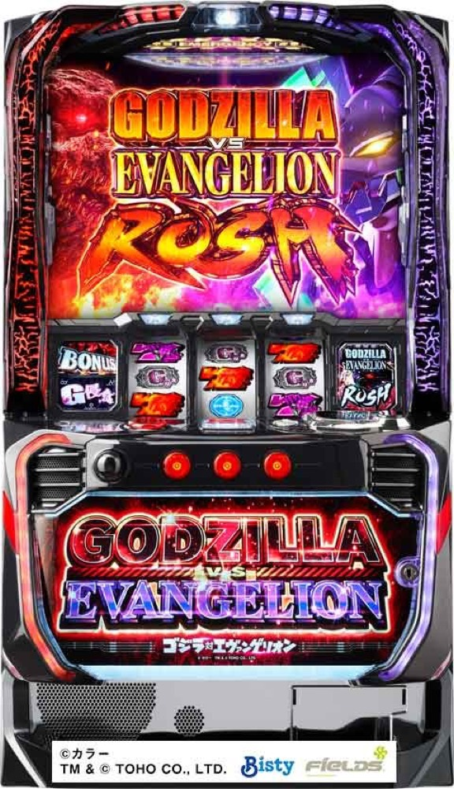

L ゴジラ対エヴァンゲリオン
約100枚のBONUSから5G＋αのRUSHチャレンジへ。50〜600Gの高純増ATと決戦キングギドラを専用進行で体験。
- 導入
- 2024年2月
- メーカー
- ビスティ
- 分類
- パチスロ
主要スペック
3種類の初当りBONUS、RUSHチャレンジ、ゴジエヴァアタック、純増約5.0枚/GのゴジエヴァRUSH、殲滅作戦、4Gの決戦キングギドラ、初回100G以上×約77%のG覚醒RUSHまでを機種専用画面で再現します。
- BONUSは20G・約100枚・純増約5.0枚/G
- RUSHチャレンジは5G＋α・期待度約57%
- 通常ATの初期ゲーム数は50〜600G
- G覚醒RUSHは初回100G以上・約77%ループ
L ゴジラ対エヴァンゲリオンの見どころと計算条件
3種類の初当りBONUS、RUSHチャレンジ、ゴジエヴァアタック、純増約5.0枚/GのゴジエヴァRUSH、殲滅作戦、4Gの決戦キングギドラ、初回100G以上×約77%のG覚醒RUSHまでを機種専用画面で再現します。
スマスロ ゴジエヴァを数字で早分かり
初当りBONUSからゴジエヴァRUSH、G覚醒RUSHまでの流れと、設定ごとの結果差を固定レートで比較できます。
30秒で分かるスマスロ ゴジエヴァ
約100枚のBONUSから5G＋αのチャレンジを突破し、50〜600Gの高純増AT、10倍上乗せ、約77%ループの上位を目指すゲーム数管理型です。
こんな遊び方に向いている
- BONUS後の5Gを回して最終PUSHを押したい
- 殲滅作戦のバトルと10倍追撃を体験したい
- 決戦キングギドラから上位ATを狙いたい
遊ぶ前に確認したいこと
- BONUS・AT初当り、主要ゲーム数、純増、公開期待度は解析値
- 上乗せゲーム数と獲得枚数を分けて表示
- 未公表の細かな振り分けは体験用代表値
3種類のBONUSとRUSHチャレンジ
初当りはエヴァンゲリオンBONUS、ゴジラBONUS、G覚醒チャレンジの3種類。いずれも20G・純増約5.0枚/Gで、獲得目安は約100枚です。エヴァンゲリオンBONUSは小役でRUSHチャレンジ獲得を抽選し、ゴジラBONUSはRUSHチャレンジ濃厚です。
RUSHチャレンジは5G＋αで、全役でATを抽選。平均期待度は約57%です。G覚醒チャレンジは失敗でも通常AT、成功ならG覚醒アタックから上位ATへ進みます。専用画面ではBONUS消化と最終PUSHを分けて表示します。
ゴジエヴァアタックと通常AT
AT突入時はゴジエヴァアタックで初期ゲーム数を決定。獲得範囲は50〜600Gで、ハズレ・ベルでも約16%、リプレイなら約45%で100G以上、レア役・G侵食役なら100G以上が濃厚です。
ゴジエヴァRUSHは純増約5.0枚/Gのゲーム数上乗せ型。小役連とレア役で直乗せとバトル上乗せをダブル抽選し、ベルでG因子ポイント、スイカで殲滅作戦を抽選します。
殲滅作戦と10倍上乗せ
殲滅作戦はAT中のスイカ成立時の一部から入るバトル型CZ。通常AT中の勝利期待度は約50%で、勝利時は10〜30G上乗せと追撃チャンスへ進みます。
追撃チャンスの成功期待度も約50%。成功すれば獲得した10〜30Gが10倍へ昇格します。専用画面ではバトルと追撃を別々のPUSHにし、上乗せゲーム数だけを先に表示します。
決戦キングギドラとG覚醒RUSH
決戦キングギドラは4Gの上位ATチャレンジで、初回成功期待度は約55%。AT最終ゲームのレア役、ギドラアイコン、エンディング後などから突入します。
勝利後はG覚醒アタックで初回100〜600Gを決定し、G覚醒RUSHへ。2セット目以降は30G以上で、セット終了ごとに決戦キングギドラへ進み約77%でループします。上位終了後70G以内のBONUSは上位復帰濃厚です。
固定条件と簡略化する範囲
- 約33G/50枚・1,000円46枚貸し・5.2枚交換で固定
- 設定1・2・4・5・6のBONUS・AT初当りと出玉率は公開設定別値
- 3種類のBONUS、RUSHチャレンジ、初期G決定、殲滅作戦、決戦キングギドラ、G覚醒RUSHを専用進行
- BONUS種類比率、通常AT中の各上乗せ出現率など未公表部分は体験用代表値
- 19,000枚到達時はコンプリート表示
平均Gと投資目安の計算
掲載するゴジエヴァRUSH初当り約1/581.8は設定1基準です。当サイトでは50枚あたり33G、1,000円46枚貸しの固定条件から、設定1基準の平均投資目安を約19,200円と計算します。
シミュレーターでは設定1・2・4・5・6を均等抽選します。設定1・2・4・5・6で公開されている初当り値を個別に使います。公開されていない特化ゾーン・上位到達率の設定差は加えません。 換金は5.2枚交換で固定し、結果とランキングに設定を表示します。
シミュレーション結果の見方
当るまで初当りBONUS・ゴジエヴァRUSHまでのゲーム数
設定設定1・2・4・5・6から抽選された今回の設定
上位到達決戦キングギドラとG覚醒RUSHへの到達
最終収支差枚と5.2枚交換の収支目安
結果は自動で「マイ記録」に保存され、同じ機種を何回試したか、最高収支、勝率をあとから確認できます。
簡易シミュレーターについて
初当りBONUS・ゴジエヴァRUSH・G覚醒RUSHの流れを固定条件で体験できます。JavaScriptを有効にすると、この位置にシミュレーター、演出、マイ記録、機種別ランキングが表示されます。
結果は娯楽・確率理解のための参考表示です。金銭的価値や交換価値はなく、実際の勝敗や収支を保証しません。18歳未満の方の利用はお控えください。
スマスロ ゴジエヴァのよくある質問
スマスロ ゴジエヴァはどんな台？
3種類の初当りBONUS、RUSHチャレンジ、ゴジエヴァアタック、純増約5.0枚/GのゴジエヴァRUSH、殲滅作戦、4Gの決戦キングギドラ、初回100G以上×約77%のG覚醒RUSHまでを機種専用画面で再現します。 BONUSは20G・約100枚・純増約5.0枚/Gが主な確認ポイントです。
スマスロ ゴジエヴァの平均投資目安は？
設定1基準のゴジエヴァRUSH初当り約1/581.8と、50枚あたり33G・46枚貸しの固定条件から、平均19,200円を目安として表示します。実際の設定や遊技状況で結果は変わります。
設定とゲームの流れはどう抽選する？
開始時に設定1・2・4・5・6から1つを均等抽選し、初当りBONUS、ゴジエヴァRUSH、決戦キングギドラ、G覚醒RUSHの順で到達を判定します。設定は最終結果とランキングに表示します。
収支はどう計算する？
1,000円46枚貸し・5.2枚交換の固定条件で投資、換金、収支目安を計算します。実店舗の再プレイ、持ちメダル、端数処理は含みません。